In this section, we will see how trigonometry is used for finding the heights and distances of various objects without actually measuring them. For example, the height of a tower, mountain, building or tree, distance of a ship from a light house, width of a river, etc. can be determined by using knowledge of trigonometry. The process of finding Heights and Distances is the best example of applying trigonometry in real-life situations. We would explain these applications through some examples. Before studying methods to find heights and distances, we should understand some basic definitions.
Line of Sight
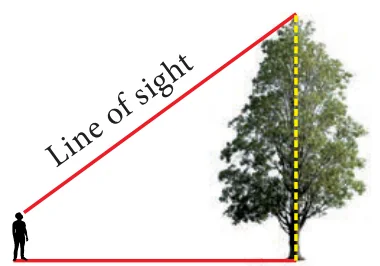
The line of sight is the line drawn from the eye of an observer to the point in the object viewed by the observer.
Theodolite
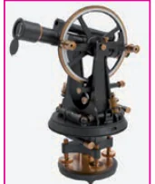
Theodolite is an instrument which is used in measuring the angle between an object and the eye of the observer. A theodolite consists of two graduated wheels placed at right angles to each other and a telescope. The wheels are used for the measurement of horizontal and vertical angles. The angle to the desired point is measured by positioning the telescope towards that point. The angle can be read on the telescope scale.
Angle of Elevation
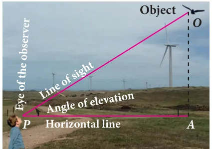
The angle of elevation is an angle formed by the line of sight with the horizontal when the point being viewed is above the horizontal level. That is, the case when we raise our head to look at the object. (see Fig. 6.7)
Angle of Depression
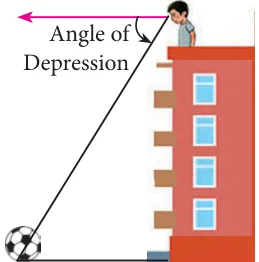
The angle of depression is an angle formed by the line of sight with the horizontal when the point is below the horizontal level. That is, the case when we lower our head to look at the point being viewed. (see Fig. 6.8)
Clinometer
The angle of elevation and depression are usually measured by a device called clinometer.
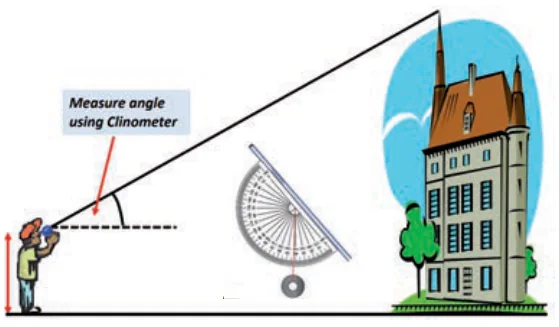
Note
- From a given point, when height of an object increases the angle of elevation increases.
If \(h_1 > h_2\) then \(\alpha > \beta\)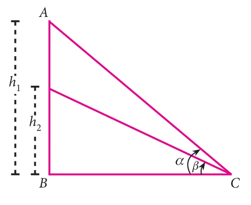
Fig. 6.10(a) - The angle of elevation increases as we move towards the foot of the vertical object like tower or building.
If \(d_2 < d_1\) then \(\beta > \alpha\)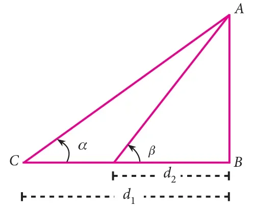
Fig. 6.10(b)
Activity 2
Representation of situations through right triangles. Draw a figure to illustrate the situation.
| Situations | Draw a figure |
|---|---|
| A tower stands vertically on the ground. From a point on the ground, which is 20m away from the foot of the tower, the angle of elevation of the top of the tower is found to be 45°. | 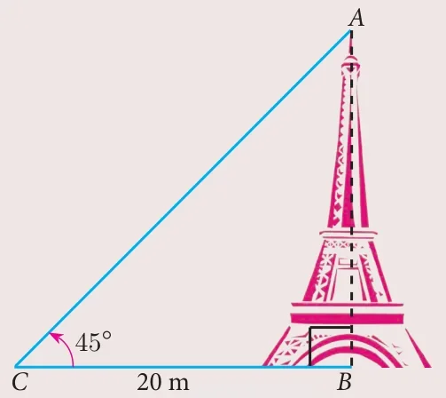 |
| An observer of 1.8 m tall is 25.2 m away from a chimney. The angle of elevation of the top of the chimney from her eyes is 45°. | ……………… |
| From a point \(P\) on the ground the angle of elevation of the top of a 20 m tall building is 30°. A flag is hoisted at the top of the building and the angle of elevation of the top of the flagstaff from \(P\) is 55°. | ……………… |
| The shadow of a tower standing on a level ground is found to be 40 m longer when the Sun’s altitude is 30° than when it is 60°. | ……………… |
6.3.1 Problems involving Angle of Elevation
In this section, we try to solve problems when Angle of elevation are given.
Example 6.18
Calculate \(\angle BAC\) in the given triangles. (\(\tan 38.7^\circ = 0.8011\), \(\tan 69.4^\circ = 2.6604\))
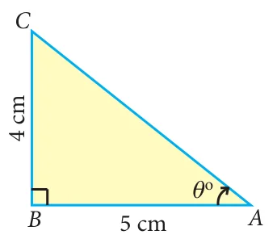
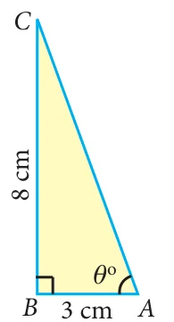
Solution
(i) In the right angled \(\Delta ABC\) [see Fig. 6.12(a)]
\(\tan\theta = \dfrac{\text{opposite side}}{\text{adjacent side}} = \dfrac{4}{5}\)
\(\tan\theta = 0.8\)
\(\Rightarrow \theta = 38.7^\circ \quad (\because \tan 38.7^\circ = 0.8011)\)
\(\therefore\ \angle BAC = 38.7^\circ\)
(ii) In the right angled \(\Delta ABC\) [see Fig. 6.12(b)]
\(\tan\theta = \dfrac{8}{3}\)
\(\tan\theta = 2.66\)
\(\Rightarrow \theta = 69.4^\circ \quad (\because \tan 69.4^\circ = 2.6604)\)
\(\therefore\ \angle BAC = 69.4^\circ\)
Example 6.19
A tower stands vertically on the ground. From a point on the ground, which is 48 m away from the foot of the tower, the angle of elevation of the top of the tower is \(30^\circ\). Find the height of the tower.
Solution
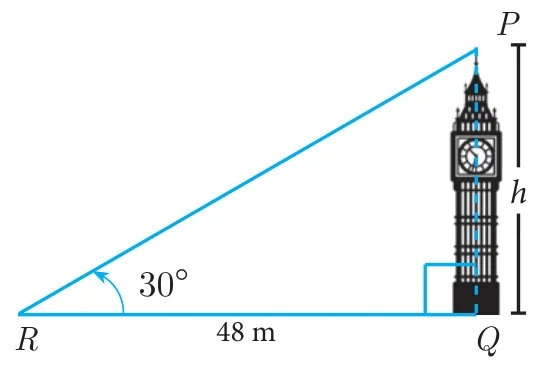
Let \(PQ\) be the height of the tower.
Take \(PQ = h\) and \(QR\) is the distance between the tower and the point \(R\). In the right angled \(\Delta PQR\), \(\angle PRQ = 30^\circ\)
\(\tan\theta = \dfrac{PQ}{QR}\)
\(\tan 30^\circ = \dfrac{h}{48} \Rightarrow \dfrac{1}{\sqrt{3}} = \dfrac{h}{48} \Rightarrow h = 16\sqrt{3}\)
Therefore, the height of the tower is \(16\sqrt{3}\) m
Example 6.20
A kite is flying at a height of 75 m above the ground. The string attached to the kite is temporarily tied to a point on the ground. The inclination of the string with the ground is \(60^\circ\). Find the length of the string, assuming that there is no slack in the string.
Solution
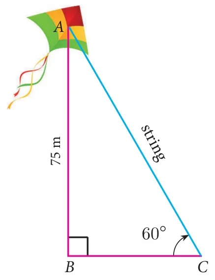
Let \(AB\) be the height of the kite above the ground. Then, \(AB = 75\).
Let \(AC\) be the length of the string.
In the right angled \(\Delta ABC\), \(\angle ACB = 60^\circ\)
\(\sin\theta = \dfrac{AB}{AC}\)
\(\sin 60^\circ = \dfrac{75}{AC}\)
\(\Rightarrow \dfrac{\sqrt{3}}{2} = \dfrac{75}{AC} \Rightarrow AC = \dfrac{150}{\sqrt{3}} = 50\sqrt{3}\)
Hence, the length of the string is \(50\sqrt{3}\) m.
Example 6.21
Two ships are sailing in the sea on either sides of a lighthouse. The angle of elevation of the top of the lighthouse as observed from the ships are \(30^\circ\) and \(45^\circ\) respectively. If the lighthouse is 200 m high, find the distance between the two ships. (\(\sqrt{3} = 1.732\))
Solution
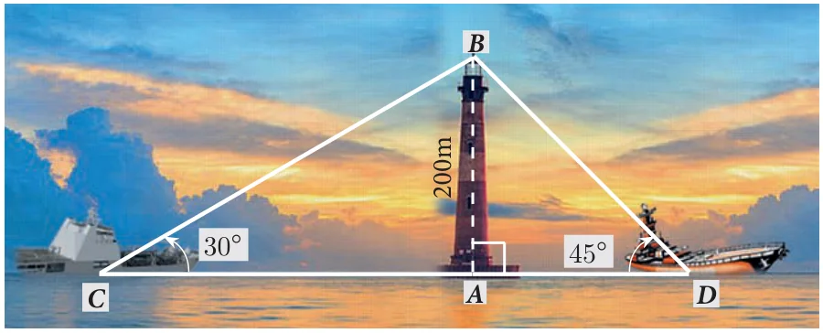
Let \(AB\) be the lighthouse. Let \(C\) and \(D\) be the positions of the two ships.
Then, \(AB = 200\) m.
\(\angle ACB = 30^\circ\), \(\angle ADB = 45^\circ\)
In the right angled \(\Delta BAC\), \(\tan 30^\circ = \dfrac{AB}{AC}\)
\(\dfrac{1}{\sqrt{3}} = \dfrac{200}{AC} \Rightarrow AC = 200\sqrt{3} \quad \ldots(1)\)
In the right angled \(\Delta BAD\), \(\tan 45^\circ = \dfrac{AB}{AD}\)
\(1 = \dfrac{200}{AD} \Rightarrow AD = 200 \quad \ldots(2)\)
Now, \(CD = AC + AD = 200\sqrt{3} + 200\) [by (1) and (2)]
\(CD = 200(\sqrt{3} + 1) = 200 \times 2.732 = 546.4\)
Distance between two ships is 546.4 m.
Example 6.22
From a point on the ground, the angles of elevation of the bottom and top of a tower fixed at the top of a 30 m high building are \(45^\circ\) and \(60^\circ\) respectively. Find the height of the tower. (\(\sqrt{3} = 1.732\))
Solution
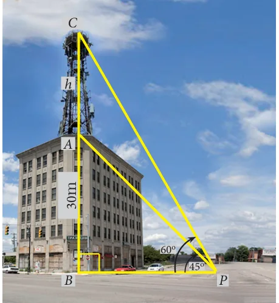
Let \(AC\) be the height of the tower.
Let \(AB\) be the height of the building.
Then, \(AC = h\) metres, \(AB = 30\) m
In the right angled \(\Delta CBP\), \(\angle CPB = 60^\circ\)
\(\tan\theta = \dfrac{BC}{BP}\)
\(\tan 60^\circ = \dfrac{AB + AC}{BP} \Rightarrow \sqrt{3} = \dfrac{30 + h}{BP} \quad \ldots(1)\)
In the right angled \(\Delta ABP\), \(\angle APB = 45^\circ\)
\(\tan\theta = \dfrac{AB}{BP}\)
\(\tan 45^\circ = \dfrac{30}{BP} \Rightarrow BP = 30 \quad \ldots(2)\)
Substituting (2) in (1), we get \(\sqrt{3} = \dfrac{30 + h}{30}\)
\(h = 30(\sqrt{3} - 1) = 30(1.732 - 1) = 30(0.732) = 21.96\)
Hence, the height of the tower is 21.96 m.
Example 6.23
A TV tower stands vertically on a bank of a canal. The tower is watched from a point on the other bank directly opposite to it. The angle of elevation of the top of the tower is 58°. From another point 20 m away from this point on the line joining this point to the foot of the tower, the angle of elevation of the top of the tower is 30°. Find the height of the tower and the width of the canal. (\(\tan 58^\circ = 1.6003\))
Solution
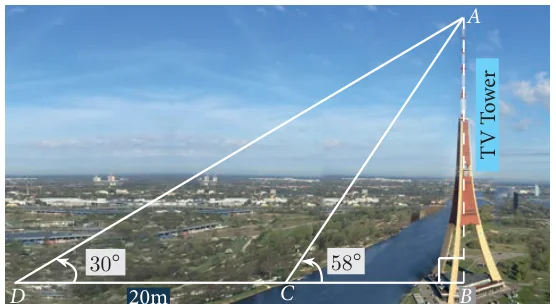
Let \(AB\) be the height of the TV tower.
\(CD = 20\) m.
Let \(BC\) be the width of the canal.
In the right angled \(\Delta ABC\), \(\tan 58^\circ = \dfrac{AB}{BC}\)
\(1.6003 = \dfrac{AB}{BC} \quad \ldots(1)\)
In the right angled \(\Delta ABD\), \(\tan 30^\circ = \dfrac{AB}{BD} = \dfrac{AB}{BC + CD}\)
\(\dfrac{1}{\sqrt{3}} = \dfrac{AB}{BC + 20} \quad \ldots(2)\)
Dividing (1) by (2) we get,
\(\dfrac{1.6003}{\;\frac{1}{\sqrt{3}}\;} = \dfrac{BC + 20}{BC}\)
\(BC = \dfrac{20}{1.7717} = 11.29\text{ m} \quad \ldots(3)\)
\(1.6003 = \dfrac{AB}{11.29}\) [from (1) and (3)]
\(AB = 18.07\)
Hence, the height of the tower is 18.07 m and the width of the canal is 11.29 m.
Example 6.24
An aeroplane sets off from \(G\) on a bearing of 24° towards \(H\), a point 250 km away. At \(H\) it changes course and heads towards \(J\) deviates further by 55° and a distance of 180 km away.
- How far is \(H\) to the North of \(G\)?
- How far is \(H\) to the East of \(G\)?
- How far is \(J\) to the North of \(H\)?
- How far is \(J\) to the East of \(H\)?
\(\left(\begin{array}{ll}\sin 24^\circ = 0.4067 & \sin 11^\circ = 0.1908\\ \cos 24^\circ = 0.9135 & \cos 11^\circ = 0.9816\end{array}\right)\)
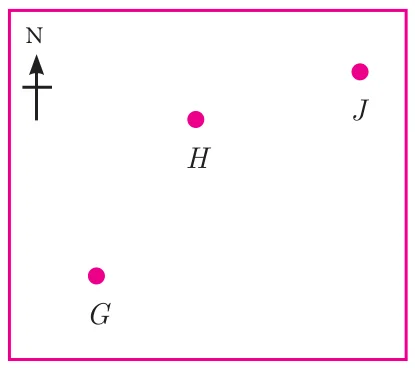
Solution
(i) In the right angled \(\Delta GOH\), \(\cos 24^\circ = \dfrac{OG}{GH}\)
\(0.9135 = \dfrac{OG}{250};\quad OG = 228.38\text{ km}\)
Distance of \(H\) to the North of \(G = 228.38\) km
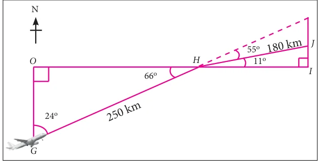
(ii) In the right angled \(\Delta GOH\),
\(\sin 24^\circ = \dfrac{OH}{GH}\)
\(0.4067 = \dfrac{OH}{250};\quad OH = 101.68\)
Distance of \(H\) to the East of \(G = 101.68\) km
(iii) In the right angled \(\Delta HIJ\),
\(\sin 11^\circ = \dfrac{IJ}{HJ}\)
\(0.1908 = \dfrac{IJ}{180};\quad IJ = 34.34\text{ km}\)
Distance of \(J\) to the North of \(H = 34.34\) km
(iv) In the right angled \(\Delta HIJ\),
\(\cos 11^\circ = \dfrac{HI}{HJ}\)
\(0.9816 = \dfrac{HI}{180};\quad HI = 176.69\text{ km}\)
Distance of \(J\) to the East of \(H = 176.69\) km
Example 6.25
As shown in the figure, two trees are standing on flat ground. The angle of elevation of the top of both the trees from a point \(X\) on the ground is \(40^\circ\). If the horizontal distance between \(X\) and the smaller tree is 8 m and the distance of the top of the two trees is 20 m, calculate
- the distance between the point \(X\) and the top of the smaller tree.
- the horizontal distance between the two trees.
(\(\cos 40^\circ = 0.7660\))
Solution
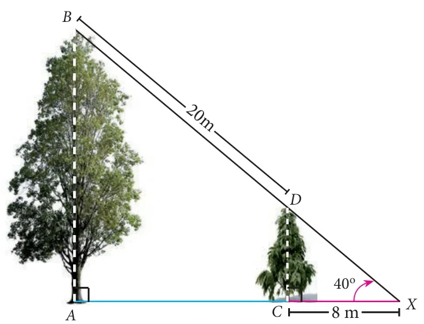
Let \(AB\) be the height of the bigger tree and \(CD\) be the height of the smaller tree and \(X\) is the point on the ground.
(i) In the right angled \(\Delta XCD\), \(\cos 40^\circ = \dfrac{CX}{XD}\)
\(XD = \dfrac{8}{0.7660} = 10.44\text{ m}\)
Therefore, the distance between \(X\) and top of the smaller tree \(= XD = 10.44\) m
(ii) In the right angled \(\Delta XAB\),
\(\cos 40^\circ = \dfrac{AX}{BX} = \dfrac{AC + CX}{BD + DX}\)
\(0.7660 = \dfrac{AC + 8}{20 + 10.44} \Rightarrow AC = 23.32 - 8 = 15.32\text{ m}\)
Therefore, the horizontal distance between two trees \(= AC = 15.32\) m
Thinking Corner
- What type of triangle is used to calculate heights and distances?
- When the height of the building and distances from the foot of the building is given, which trigonometric ratio is used to find the angle of elevation?
- If the line of sight and angle of elevation is given, then which trigonometric ratio is used
- to find the height of the building
- to find the distance from the foot of the building.